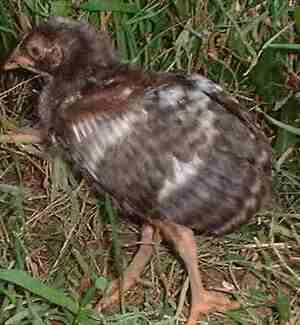
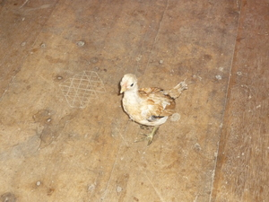

piyak  
/piak/
n.
“young_bird”
n.
a young bird (e.g. chicken or duckling)
Ka seini ne lalag iyan sika se pispis pad wey deisek pad layun pad egkupkupa te inayan wey minsan nekey kalasiyan te manu seini iya ka ig-umew.
Piyak te patuk ka nakuwa te asu ku seeyè se miglihad ne simana.
Duckling was caught by my dog last week.
duckling
Tag. +sísiw ng ítik
Tag. +píso sa ítik
Eng. chick; young bird; duckling
Tag. sísiw
Ceb. pisô
Ilo.: billit; piok
OCM: Ethnozoology (825), Fauna (136)
DDP: Bird (1.6.1.2), Animal life cycle (1.6.3)
Online dict status: -
Usage level: F
v.
for a big child (egpapiyakpiyak, migpapiyakpiyak/impapiyakpiyak/pigpapiyakpiyak, eg><ø-pA-rdpRT-) to act like a baby, i.e., to have a crying fit or to try to snatch something from the mother
Kenè egkeyilew si Gagang ne egpapiyak-piyak ne buyag e.
Gagang is shameless acting like a child even she is old.
Eng. act like baby
Online dict status: -
Usage level: R
Updated by: RJH,TME,AAA,QDL,NJK,QDL,NJK,RJH
Last updated: 29/Jul/2014
"piyak" in reader "Nekey-a ka deisek?"
"Piyak" in reader "Ka ngaran te me anak"
This page last updated: 28-Dec-2019
Copyright © 2009-2014, Matigsalug Language Christian Association, Inc